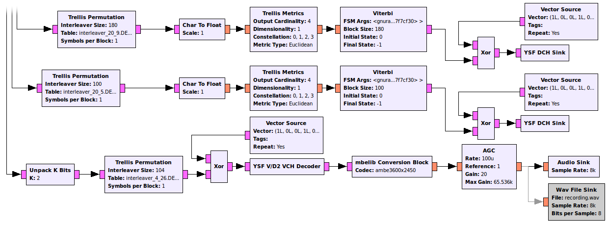

Introduction
Yaesu System Fusion (YSF) is a radio system designed and implemented by Yaesu. At its core, it merges traditional FM with a digital voice packet mode. This project's aim is to investigate the digital aspect of YSF and to provide decoding tools. In order to meet this goal, GNU Radio is employed to do most of the tricky things outlined in the technical specifications of the system.
Please note that this is not a software package that you can download and tune into YSF signals. This is merely a proof of concept that demonstrates that it is possible to build a receiver for YSF. Insights gained from this work might be used to add YSF support to e.g. DSD, but this project is not a scanner application per se. Also note that this is not a finished product. For example, only the half rate mode ("DN") is supported; I have not addressed the full rate mode ("VW"). Check the issues page on github for an overview of what you can expect. In particular, mbelib is required to turn the AMBE frames into something that you can hear. This might have legal implications for you, please be aware of that.
Here is an early recording (direct link) of what I got out of the system while transmitting with an FT1D. Reception was done with a HackRF One, although one of those cheap RTL SDR dongles will probably work just as well (stay tuned for an update):
If you want to give it a try yourself, have a look at the Getting Started page. Again, this is some experimental stuff that I am sharing with other curious amateurs and not a "download, run and forget" kind of program.
Before I dig into the details of this work, let me say thank you to the amazing GNU Radio community who not only came up with a great software framework, but also provided me with a lot of help when things were not working the way I expected them to work. Johnathan Corgan in particular shared a lot of the insights he gained while working on C4FM for the past few years.
Walkthrough
This section briefly outlines the ysf_rx.grc flowgraph found in the
examples/
directory of the project. The flowgraph corresponds to commit
cda9f51, although I will update this page as things progress. The
full flowgraph can be seen here, I will split it into
several parts to make this discussion easier to follow.
{kind=link}
Frontend

The quadrature signal is captured by hardware (osmocom Source) or replayed through a file source and fed into a frequency xlating FIR filter, where it is filtered, shifted to DC and down-sampled. The filtering is necessary to prevent aliasing. The frequency shift is done because some SDRs have a considerable spike at DC that is in the way. An easy way to get around that is to set the hardware up such that the signal for interest is offset. For example, one can set a center frequency of 432 MHz and transmit at 432.5 MHz. The frequency has then to be translated downwards by 500 kHz. The quadrature signal is then demodulated before it is fed into the polyphase clock sync block. This block applies the root-raised cosine (RRC) filter and outputs dibits at a symbol rate of 4.8 kHz. Note that the equation for the RRC filter is completely wrong and doesn't even make sense, but the symbol rate and the roll-off given are correct.
Slicing, Mapping, Deframing and the FICH Packet

The signal from the clock recovery block is sliced into the four levels that
are inherent to C4FM. They are then remapped to the dibits defined in Table 3-1
of the Yaesu spec. The YSF Deframer is my first custom block. It waits for the
sync word 0xd471c9634d which marks the beginning of every packet.
The subsequent 200 bits are sent to the top output stream. Those are the FICH
header which contains information on the payload-content and -structure. The
subsequent 720 payload-bits are then temporarily stored inside the deframer.
The FICH header is decoded according to Figure 4-26 of the Yaesu spec. The sequence of blocks needed for this is very similar to the payload decoding outlined in the next section. Note however that in the flowchart shown above, Golay decoding is not performed. Instead, the first 12 bits are kept and the remainder is thrown away. I can get away with this because the first block of the Golay-matrix is identity, but eventually I will have to do this properly. After decoding, the FICH header hits the YSF FICH Sink, the second custom block. This block parses the FICH header and sends back a message to the deframer, telling it what is contained in the payload. The deframer pulls apart the payload according to those instructions and distributes it into the three payload streams.
Decoding
This part of the flowgraph takes care of turning the dibits into the packets expected by the sinks. This is an implementation of Figures 4-30, 4-31 (which only differs from the former by its parameters) and 4-32 of the Yaesu spec. It is remarkable that all of these blocks are standard GNU Radio blocks. I had to hack up my own scrambler as the one from GNU Radio exhibited a bug.
Only three custom blocks are necessary in this part of the flowgraph: The DCH Sink takes the DCH packets containing e.g. call sign information and dumps them to the console. The V/D 2 VCH Decoder undoes the weird bit triplication introduced in step 3 of Figure 4-32 of the Yaesu spec. The output of this block is an AMBE frame. Those AMBE frames enter the third custom block, mbelib Conversion Block. This block calls mbelib and retrieves the synthesized speech, which is normalized in amplizude by an AGC and sent to the speaker.
License, Code and Dependencies
The project is released on a github page under the GNU GPL 3 license. The code is written in C++ and was tested with g++ 4.8.4 and GNU Radio 3.7.5. mbelib is required to synthesize voice.